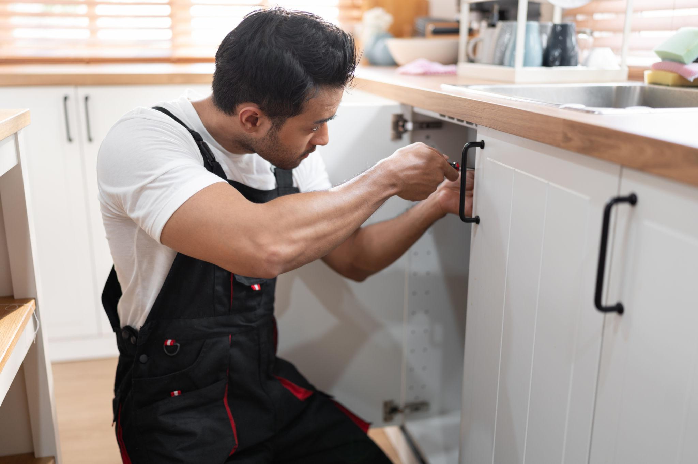
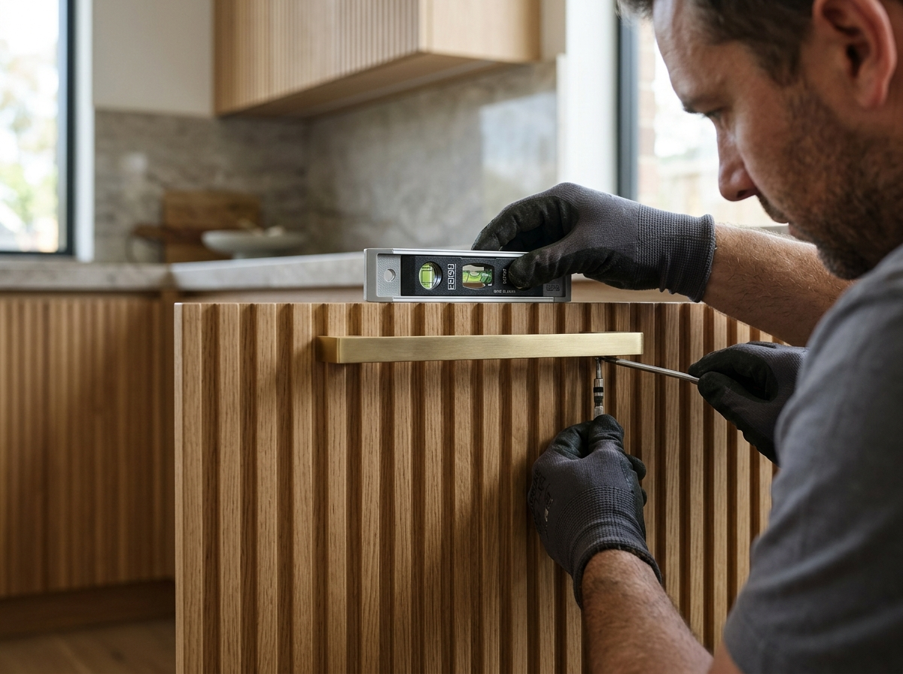
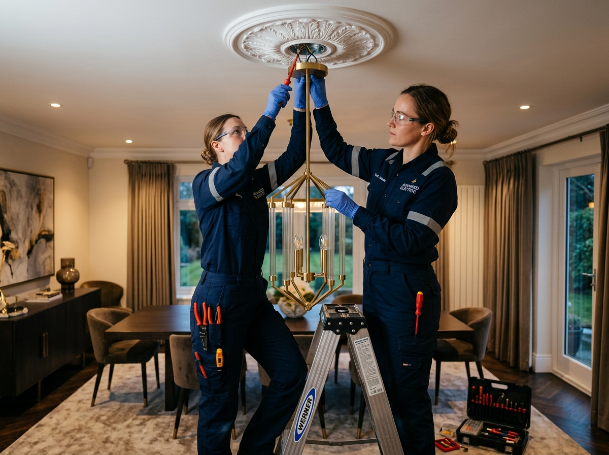

01
Trust & Transparency
We aim to make connecting with local service professionals straightforward, with clear communication at every step.
Built on trust
We make it easier to explore home services, discover the right solutions, and move forward with confidence. Your home deserves care that fits your needs.
Made for better home experiences Simple solutions for everyday home needs


Every home needs a helping hand. We created our platform to make finding reliable local handypeople and home repair services easier, more convenient, and less stressful.
From small household fixes to ongoing home maintenance, our goal is to help homeowners connect with professionals who understand their needs. We believe getting help for your home should feel straightforward from the first request to the finished repair.
Explore services suited to your home needs.
Connect with local professionals conveniently.
We believe home repairs should be easier to arrange, easier to understand, and built around the needs of every homeowner.
We aim to make connecting with local service professionals straightforward, with clear communication at every step.
Your home and your needs come first. We focus on making it easier to explore suitable services and arrange the help you need.
From finding the right service to completing everyday repairs, we value thoughtful work and a dependable service experience.
Getting help with home repairs doesn't need to be complicated. Follow a few simple steps to get started.
Find the home repair or maintenance service that matches your needs.
Explore available service options and select the professional that suits your requirements.
Share your requirements and coordinate a convenient time for your repair.
Let your home repair move forward so you can focus on the things that matter most.


Behind every home repair is a person who wants the job done right. We believe a better service experience begins with respectful communication, practical expertise, and a genuine understanding of your needs.
Find service options suited to your household repair and maintenance needs.
We value a service experience built around consideration for your home and time.
Clear expectations help you understand the next steps for your home service request.
Discover how the right support can make home maintenance and improvement projects feel simpler.
“Finding help for home projects can feel overwhelming. A simple way to explore services makes getting started feel much easier.”

“Clear communication and convenient service options can help homeowners plan repairs and improvements with greater confidence.”

“Every home has different needs. Having options for maintenance, repairs, and improvements makes it easier to plan the next project.”

From everyday repairs to meaningful improvements, find the right support to make caring for your home simpler.